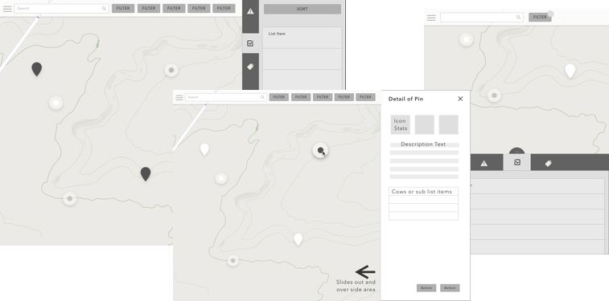

Project Background
In the United States, the cattle industry is a multi-billion dollar industry. As of 2016, the U.S. became the world's largest exporter of beef. While most of the ranching industry has remained relatively low tech, that lack of technology does not indicate simplicity. Agriculture is a science, and managing day-to-day tasks for large herds can be a real challenge.
Our Goal:
Create an app for the client that aids the process of ranching in the cattle industry by leveraging geolocation and mobile app technology. Ease the burden of communication & reduce redundancies for ranch hands by tracking tasks, record maintenance, and creating auto-reminders.
Definition & Design
Client and user interviews took place to gain insights into the daily pain points of ranching. From these interviews, we condensed a list of prioritized features for a mobile app, set to match our client's budget, while providing users with the largest gains possible.
